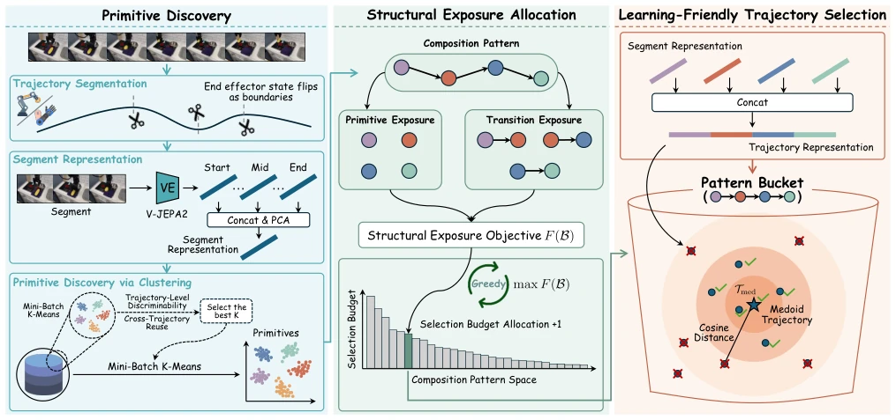
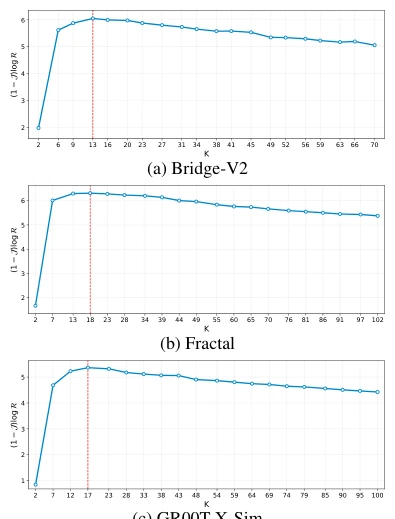
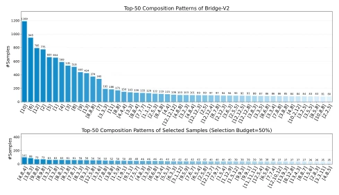

SIEVE adds a "structural sieve" to VLA training, attempting to sift out "Lego block"-style reusable modules from massive data. This approach is quite compelling, after all, the more data, the messier it gets, but the term "structure-aware" is used somewhat loosely, essentially it is still clustering + sampling. The advantage is performance improvement without additional training, the disadvantage is reliance on the accuracy of trajectory segmentation, if grasp boundaries are not cut well, the whole structure collapses. Moreover, although "Medoid" selection of center samples is stable, it might also miss edge but useful extreme cases. Overall, this adds a "structured" filter to VLA data cleaning, it understands the combinatorial logic of robot behavior better than pure random or pure quality filtering, worth referencing but don't expect it to solve all data noise problems, after all, physical boundary segmentation itself is also a black box.
研究动机Motivation
VLA 模型依赖大规模模仿学习，但数据膨胀不等于策略变强 (Zitkovich et al. 2023)。现有方法要么看轨迹整体，要么看状态动作对，粒度都不对。轨迹级太粗糙，掩盖了内部结构 (Zhang et al. 2025)；状态动作级太局部，抓不住长程语义 (Hejna et al. 2025)。这导致模型学不到可复用的行为子程序。SIEVE 受 MDL 原理启发，认为有用数据应暴露可压缩的结构，即原语和过渡接口，从而在减少数据量的同时提升策略泛化能力。现有基线往往忽略了长程行为中的组合规律，导致数据利用率低。
VLA models rely on large-scale imitation learning, but data expansion does not equal policy strengthening (Zitkovich et al. 2023). Existing methods either look at the trajectory overall or state-action pairs, neither granularity is correct. Trajectory-level is too coarse, masking internal structure (Zhang et al. 2025); State-action-level is too local, failing to capture long-range semantics (Hejna et al. 2025). This leads to the model being unable to learn reusable behavior subroutines. SIEVE is inspired by the MDL principle, believing useful data should expose compressible structure, i.e., primitives and transition interfaces, thereby improving policy generalization ability while reducing data volume. Existing baselines often ignore combinatorial patterns in long-range behavior, leading to low data utilization.
SIEVE proceeds in three steps. First, perform primitive discovery: encode trajectory segments using V-JEPA2, obtain visual-motor primitives through Mini-Batch K-Means clustering, automatically select K value to ensure discriminability and reusability. Second, perform structure exposure allocation: treat trajectories as primitive sequences, define "structure exposure goal", allocate selection budget using a log utility function, prioritize retaining primitives and transitions with more participation patterns, reflecting diminishing marginal returns. Finally, perform learning-friendly selection: select Medoid trajectory (center sample) within each pattern bucket, ensure state-action mapping stability, beneficial for behavior cloning. The overall process shifts data selection from "quality scoring" to "structure mining", screening data by maximizing structure coverage.

Figure 2: Overview of SIEVE. 1) Primitive Discovery: trajectories are segmented into primitives through representation learning and clustering. 2) Structural Exposure Allocation: a structural exposure objective estimates primitive composition coverage and allocates the selection budget across composition patterns. 3) Learning-Friendly Trajectory Selection: representative trajectories are selected within each composition-pattern bucket to construct a compact, diverse, and learning-friendly training subset.

Figure 4: Selection of the number of primitive clusters K on different datasets. Following the practical protocol used in our experiments, we randomly sample 10% of each train- ing dataset and uniformly evaluate 20 candidate K values within a reasonable search range. The optimal K is selected by maximizing the clustering score (1 −J ) log R, and is indicated by the red dashed line.
Tested on three datasets: Bridge-V2, Fractal, GR00T-X-Sim, compared with Full-Training, Random, DemInf, SCIZOR. Metric is success rate. SIEVE uses 50% data and 50% steps, achieves 56.3% on Bridge-V2, superior to Full-Training's 51.8%. Ablation studies show performance drops when removing primitives or transition items, proving structure information is key. Figure 2 shows distribution is more balanced after selection, Figure 3 shows K value selection is stable. Results prove structure-aware selection can significantly improve VLA training efficiency, especially performing more stably in long-range tasks.

Figure 3: Distribution of top-50 composition patterns be- fore and after SIEVE selection (Selection budget=50%) on Bridge-V2. Each x-axis label denotes a composition pattern, represented as an ordered list of primitive IDs.